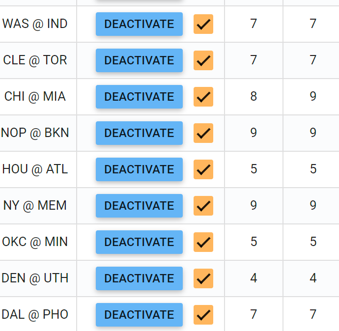
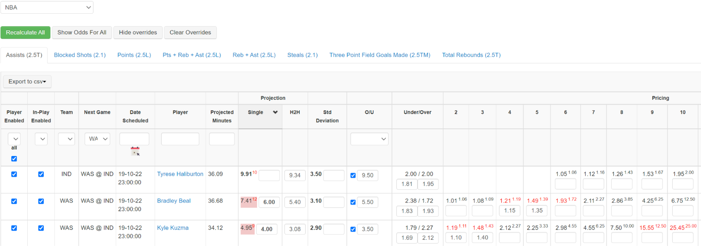
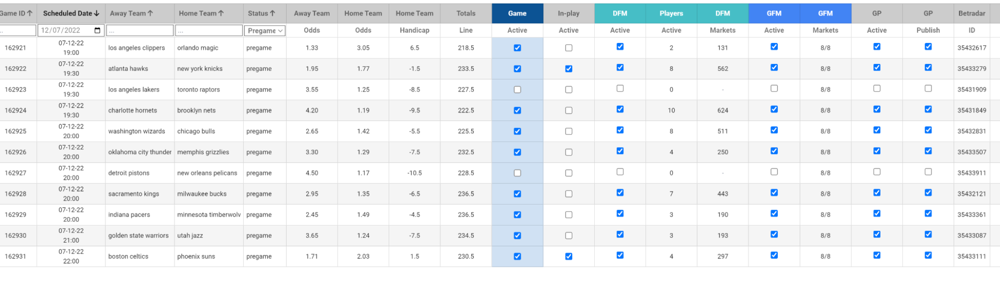
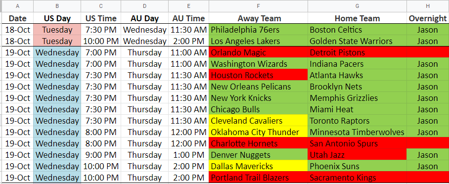
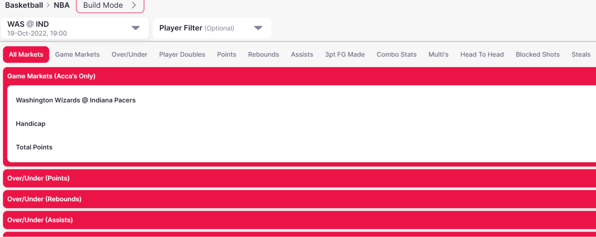
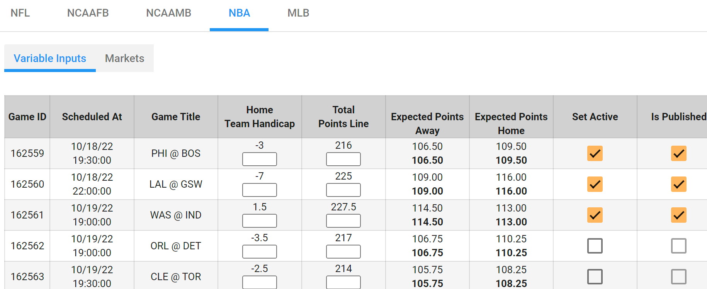
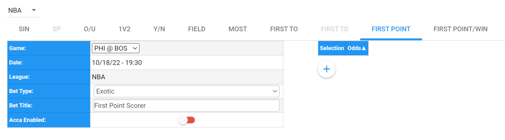

NBA Setup
Comps:
- Activate each game that is ready for setup in the comps screen: https://trading-tool.digitalsportstech.com/#!/odds-comps-screen/nba
- Can do this one by one or multiple games at a time.

- Leave the game checkmark on.
- Wait a few minutes until all players are active with auto lines on in the comps screen before doing the next step.
- Check projections and odds in the ORR.
- Fix any serious odds issues in red by raising the projection and/or Std Dev to shorten the prices. The preferred method is to raise the projection.
https://backend.digitalsportstech.com/odds/report/123

- Once a game is ready to set live, activate the game in SGM Game Manager: https://trading-tool.digitalsportstech.com/#!/sgm/pl

- All games should be active for In-Play.
- Generate the Player Feed by clicking DFM and generate game markets by clicking GFM.
- Mark the google doc schedule with your name and highlight the teams.
- Green is 4 or more players are live for that team
- Yellow is 1-3 players are live for that team
- Red is 0 players are live for that team

- Check the front end to make sure the game is live and feeds were properly generated:
- https://bv2.digitalsportstech.com/betbuilder?sb=test&demo=test

- Activate and publish game props for each game you have set live:
- https://trading-tool.digitalsportstech.com/#!/custom-markets/wizard/nba

Custom Markets
- Build custom markets for each game (this is to be done by US/CR traders in the morning).
- First Point: Should automatically pull from the feed. Check everything looks okay.
- We don’t need to do First Point/Win anymore.
- Toggle Group Settlement ON (this setting ensures that we void any bets on selections that were made from a field that did not include the ultimate winner - i.e. first point scorer got added later on after original market was set live)

- Most Points: If there are no question marks in the game, select the 5 highest players and build the market. Use 3% margin for each selection. So if there are 5 players, use 115%.
- Mark the schedule with what has been done.